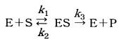
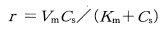
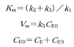

令和5年度 問35 化学プロセス
酵素は生体内において触媒として働く。酵素Eと基質Sが反応して酵素－基質複合体ESを作り。ESから生成物Pが生じると共に、Eは元に戻る。

この反応が定常状態であるとき、Pの生成速度rは、次の式で表される。

ただし、

Csは基質の濃度、CEは酵素の濃度、CESは酵素一基質複合体ESの濃度である。ここで、Csを増やした場合のrの最大値として適切なものはどれか。
①
V m / K m
②
V m / C s
③
V m C s
④
V m
⑤
C s / K m
正答
④ V m
Pの生成速度rを求める式はミカエリス・メンテンの式と呼ばれます。この式を変形することで問題は考えられます。まず元の式を記載します。
$$ r＝\frac{ V_{m} C_{s} }{ ( K_{m} + C_{s} ) }$$
この式の逆数を取ります。
$$ \frac{1}{r}＝\frac{ ( K_{m} + C_{s} ) }{ V_{m} C_{s} }$$
KmとCsそれぞれに対する分数を取る形で更に変形します。
$$ \frac{1}{r}＝\frac{ K_{m} }{ V_{m} } \times \frac{ 1 }{ C_{s} } + \frac{ 1 }{ V_{m} }$$
この変形により1/Csと1/rに関する一次式が得られます。傾きがKm/Vm、切片が1/Vmです。
問題にあるようにCsを増やした場合を考えると、1/Csはゼロに収束します。この時の1/r＝1/Vm、つまりrの最大値はVmです。